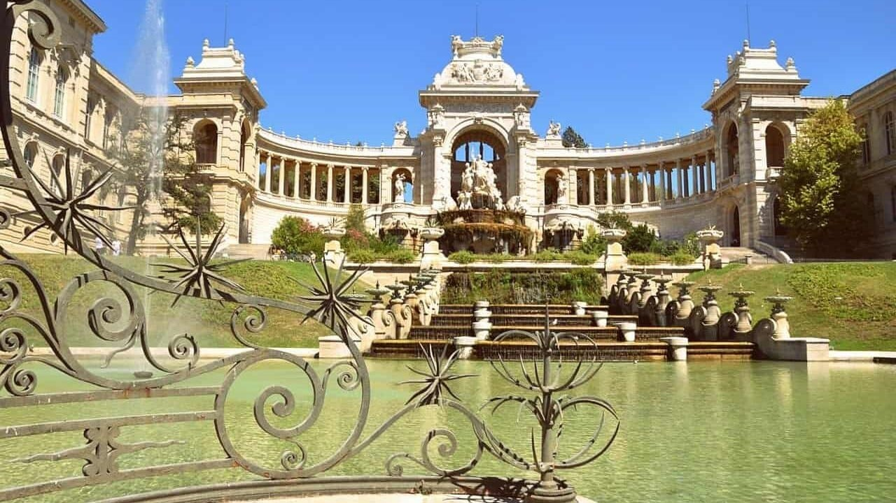
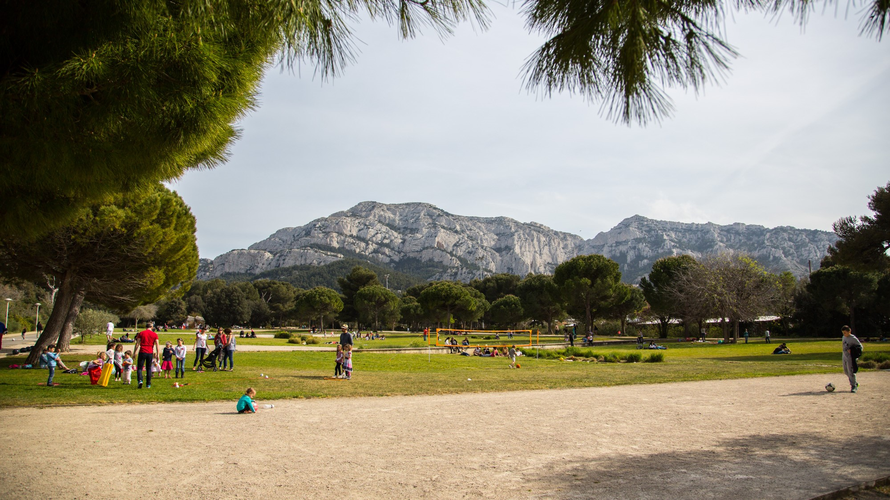
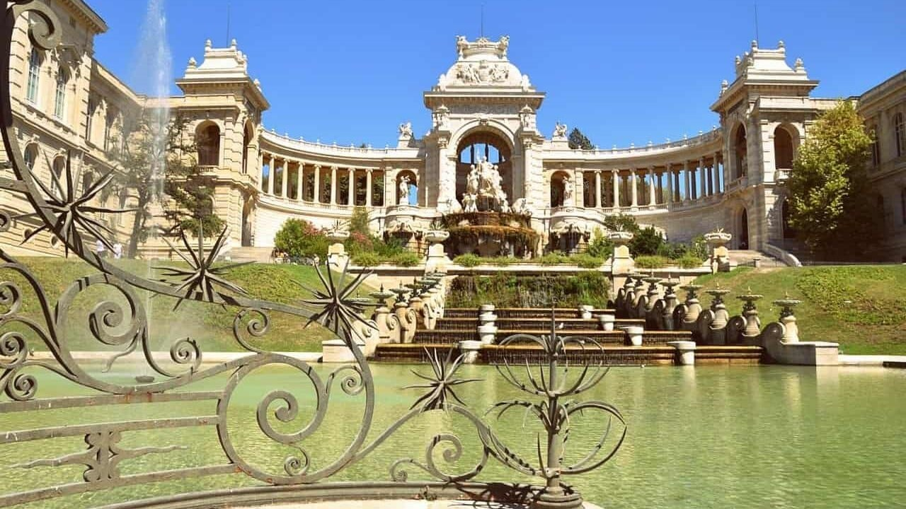
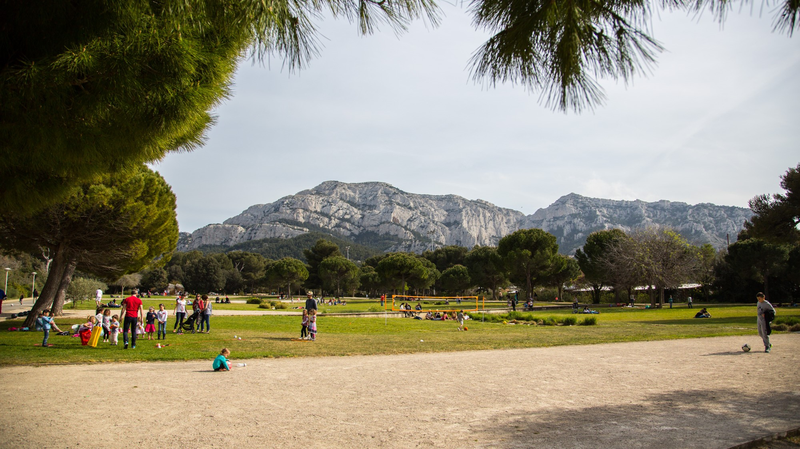
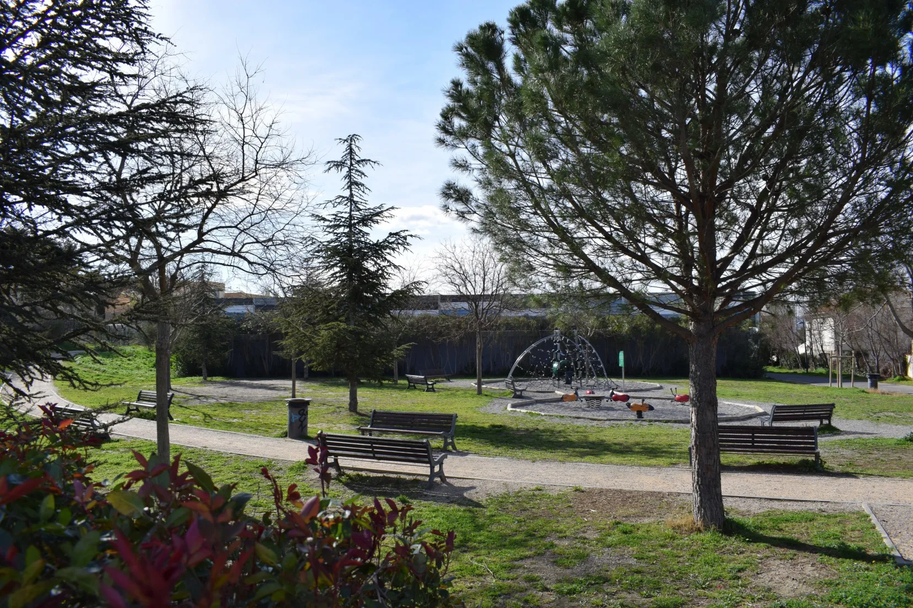
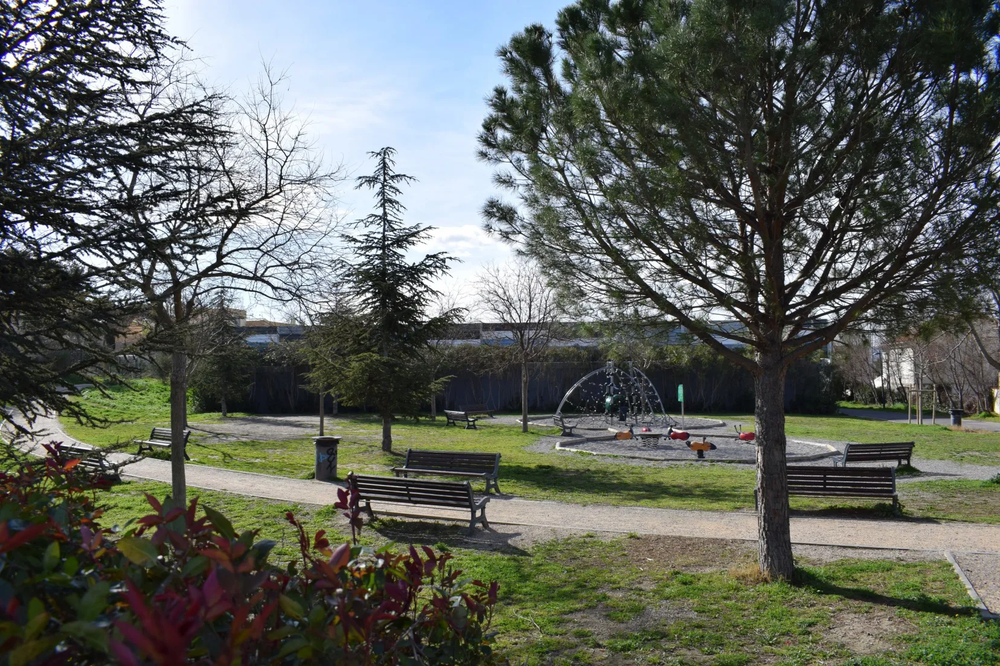

Bienvenue dans l'oasis naturelle qu'est Marseille, une ville où la beauté, la proximité avec la nature et la diversité des parcs créent une expérience exceptionnelle. Marseille séduit non seulement par son patrimoine historique, mais également par la splendeur de ses espaces verts. Des littoraux baignés de soleil aux recoins ombragés des parcs urbains, la cité phocéenne invite à une exploration captivante. Les parcs marseillais, bien loin d'être ordinaires, reflètent la diversité écologique de la région. Des collines verdoyantes aux plages pittoresques, ces espaces offrent une variété de paysages et une flore allant des plantes méditerranéennes aux espèces exotiques.
La proximité avec la nature est une caractéristique marquante de ces parcs. Accessibles à tous, ils offrent des havres de paix à quelques pas seulement du quotidien urbain, où la quiétude de la nature se mêle à la vie citadine trépidante. Parcourir les plus beaux parcs de Marseille, c'est plonger dans des univers esthétiques et pratiques. Des jardins botaniques aux parcs d'aventure, chaque espace vert raconte une histoire unique, offrant une expérience immersive pour les passionnés de plein air. Embarquez avec nous dans cette découverte des trésors naturels qui font de Marseille une destination incontournable.
 



 |
|  
